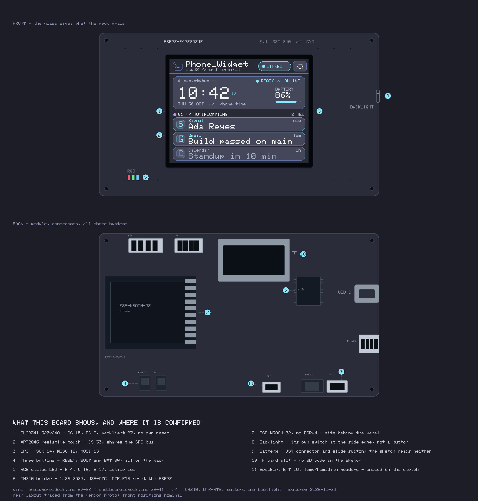

Drawn from cyd_phone_deck.ino: the sketch's own layout rects, GMK Dracula
palette and 5×7 GLCD typeface, so it cannot drift from the firmware without the
renderer being edited too. Numbered markers are facts the repo states — pins from the
sketch, the CH340 and its DTR/RTS reset from measurements on the board. Part
positions are nominal.
